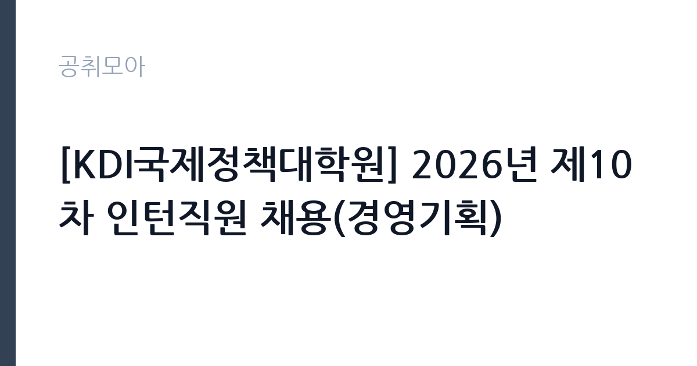

[공공기관] [KDI국제정책대학원] 2026년 제10차 인턴직원 채용(경영기획)
KDI국제정책대학원 · 세종 · 마감 2026-10-08 (D-16) · 출처 잡알리오

한눈에 보는 모집 조건
| 기관 | KDI국제정책대학원 |
|---|---|
| 공고명 | [KDI국제정책대학원] 2026년 제10차 인턴직원 채용(경영기획) |
| 고용형태 | 연수/실습 |
| 근무지 | 세종 |
| 게시일 | 2026-09-23 |
| 마감일 | 2026-10-08 (D-16) |
지원자격, 이렇게 읽으세요
- 공공기관 채용공시
- 세부 조건은 원문 공고문 확인
지원 자격은 청년고용법 시행령에 따른 만 34세 이하로, 임용일부터 전일제 근무가 가능해야 합니다. 학력과 전공, 경력에는 제한이 없어 신입도 지원하실 수 있습니다. 국가공무원법상 결격사유와 병역의무 불이행 사실이 없어야 하며, 최근 5년 이내 공공기관 채용 비위로 채용이 취소된 사실이 없어야 합니다. 해외여행에 결격사유가 없어야 한다는 조건도 포함되어 있습니다. 우대사항은 붙임의 채용공고문과 직무기술서를 참고하시기 바라며, 세부 내용은 KDI국제정책대학원 채용 홈페이지의 원문에서 확인하시기 바랍니다.
이 공고의 포인트
첫 번째 포인트는 경영기획 분야의 실무를 직접 경험할 수 있다는 점입니다. 국정감사 대응과 예·결산, 기관평가와 성과관리는 공공기관 행정의 핵심 업무라 향후 공공부문 취업에 도움이 됩니다. 두 번째로 KDI국제정책대학원은 국제적 명성을 가진 교육기관으로, 이곳에서의 근무 경험은 이력서에 의미 있는 한 줄이 될 수 있습니다. 세 번째로 학력무관·경력무관 조건이라 스펙보다 지원 동기와 성실함으로 승부할 수 있습니다. 세종 근무가 가능한 청년이라면 주목할 만한 공고입니다.
전형은 어떻게 진행되나
전형은 원서접수와 서류전형, 면접전형을 거쳐 임용하는 구조입니다. 과거 차수 공고에서는 접수 후 서류심사와 면접을 약 2~3주에 걸쳐 진행한 바 있어, 이번에도 비슷한 일정으로 진행될 것으로 보입니다. 세부 일정과 접수방법은 원문 공고문에서 확인하시기 바랍니다. 서류전형에서는 지원서와 자기소개서의 완성도가 중요하며, 면접에서는 사무보조 업무에 대한 이해와 성실함을 평가합니다. 채용 홈페이지의 공지사항을 수시로 확인하시기 바랍니다.
원문에서 확인한 전형 방식
가. 「국가공무원법」 제33조 각 호에 해당하지 아니한 자 나. 법률에 의하여 공민권이 정지 또는 박탈되지 아니한 자 다. 병역법 제76조(병역의무 불이행자에 대한 제재)에서 정한 병역의무 불이행 사실이 없는자 라. 「부패방지 및 국민권익위원회의 설치와 운영에 관한 법률」 제82조 제1항 각 호에 해당하지 아니한 자 마. 최근 5년 이내 공공기관에서 부정한 방법으로 채용되어 채용이 취소된 사실이 없는 자 바. 해외여행에 결격사유가 없는 자 사. 청년고용법시행령 제2조에 해당하는 자(만34세 이하) 아. 임용일부터 전일제 근무 가능한 자
이런 분께 추천해요
- 공공기관 행정과 기획 업무를 경험하고 싶은 만 34세 이하 청년
- 세종 근무가 가능하고 전일제 근무에 지장이 없으신 분
- 향후 공공부문 정규직을 목표로 실무 경험을 쌓으려는 구직자
지원 전 체크리스트
- 만 34세 이하 청년 요건과 전일제 근무 가능 여부를 확인했습니다
- 결격사유와 병역·해외여행 관련 조건에 해당하지 않음을 확인했습니다
- 붙임의 직무기술서에서 경영기획 담당업무를 읽어보았습니다
- 원문 공고문의 접수방법과 마감일 10월 8일을 확인했습니다
모집 일정과 제출 타이밍
마감일은 2026년 10월 8일입니다. 과거 차수 사례를 보면 접수 마감 후 서류전형과 면접전형을 거쳐 약 2~3주 내에 임용하는 일정으로 진행되었습니다. 이번 차수의 세부 일정은 원문 공고문에서 확인하시기 바랍니다. 추석 연휴 이후 일정이므로 연휴 기간을 자기소개서 작성에 활용하시면 좋습니다. 임용 예정일에 전일제 근무가 가능하도록 현재 일정도 미리 정리해 두시기 바랍니다.
직무 이해하기: 공공기관
경영기획 인턴은 국정감사와 예산 편성·결산 관련 사무보조, 기관평가와 경영계획 수립, 성과관리 관련 업무지원을 맡습니다. 과거 동일 분야 공고에 따르면 자산관리와 자산실사 지원, 구매·계약 관리 지원, 총무·시설 관련 사무행정 보조도 포함되었습니다. 세종 남세종로에 위치한 KDI국제정책대학원에서 주 5일, 1일 8시간 근무하는 형태입니다. 공공기관 경영관리의 전반을 가까이에서 배울 수 있는 자리입니다.
자기소개서 작성 팁
자기소개서에서는 공공기관 행정에 대한 관심과 사무보조 업무를 성실히 수행할 수 있다는 점을 강조하시기 바랍니다. 국정감사나 예산 업무 같은 용어가 낯설더라도, 배우려는 자세와 꼼꼼함을 보여주는 것이 중요합니다. 문서 작성과 엑셀 활용 등 기본적인 사무 역량을 구체적인 경험과 함께 제시하시기 바랍니다. KDI국제정책대학원을 선택한 이유를 해당 기관의 특성과 연결해 진정성 있게 서술하시기 바랍니다.
면접 준비 포인트
면접에서는 지원 동기와 성실함, 조직 적응력을 중심으로 평가할 가능성이 큽니다. 경영기획 업무의 내용을 직무기술서 기준으로 정리하고, 본인이 어떻게 기여할 수 있을지 답변을 준비하시기 바랍니다. 세종 근무와 전일제 근무 가능 여부에 대한 질문에는 명확하게 답변하시기 바랍니다. 밝고 단정한 태도, 경청하는 자세가 좋은 인상을 줄 수 있습니다. 예상 질문에 대한 답변을 미리 정리해 두시기 바랍니다.
급여·근무조건 읽는 법
보수는 과거 동일 기관 공고 기준으로 일 92,000원이 안내된 바 있습니다. 출처는 인크루트에 게시된 KDI국제정책대학원 2026년 제7차 인턴직원 채용 공고로, 신분은 인턴(비정규 기간제 근로자), 근무시간은 주 5일 1일 8시간, 복리후생은 4대 보험 가입으로 안내되었습니다. 다만 이번 제10차 공고의 보수 조건은 원문에서 반드시 다시 확인하시기 바랍니다. 월 환산액은 근무일수에 따라 달라지므로, 세전·세후 금액의 구분도 원문과 문의처를 통해 확인하시기 바랍니다.
자주 묻는 질문
- 인턴의 신분과 계약 기간은 어떻게 됩니까
신분은 비정규 기간제 근로자이며, 계약 기간은 공고문에 안내됩니다. 과거 차수 공고를 보면 수개월 단위의 계약이었으니, 이번 차수의 기간은 원문에서 확인하시기 바랍니다. - 나이나 학력 제한이 있습니까
만 34세 이하 청년 요건이 있으며, 학력과 전공, 경력에는 제한이 없습니다. 임용일부터 전일제 근무가 가능해야 합니다. - 보수는 얼마나 됩니까
과거 동일 기관 공고에서는 일 92,000원이 안내된 바 있습니다. 이번 차수의 정확한 보수 조건은 원문 공고문에서 확인하시기 바랍니다.
함께 보면 좋은 공고
[공공기관] 한국연구재단 PM(기초연구본부장) 초빙 재공고 — 마감 2026-10-13[공공기관] 칠곡경북대학교병원 2026년 9월 5차 임시직원 채용공고(물리치료사, 간호사, 주차, 조경관리) — 마감 2026-09-28[공공기관] '탁구 영상 데이터 기반 동작 추정을 통한 스트로크 유형 분류 모델 연구' 초빙연구원(나급) 채용 공고 — 마감 2026-10-07출처: 잡알리오 공개정보를 바탕으로 공취모아가 정리한 안내글입니다. 모집 조건·일정은 변경될 수 있으니 지원 전 반드시 원문 공고문을 확인하세요. 본 글은 정보 제공용이며 합격을 보장하지 않습니다.